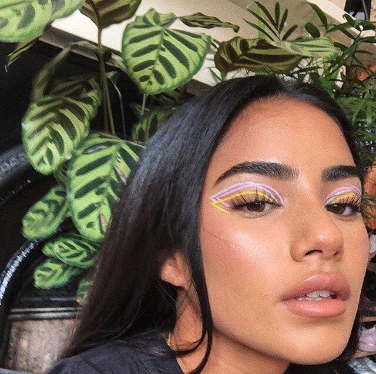
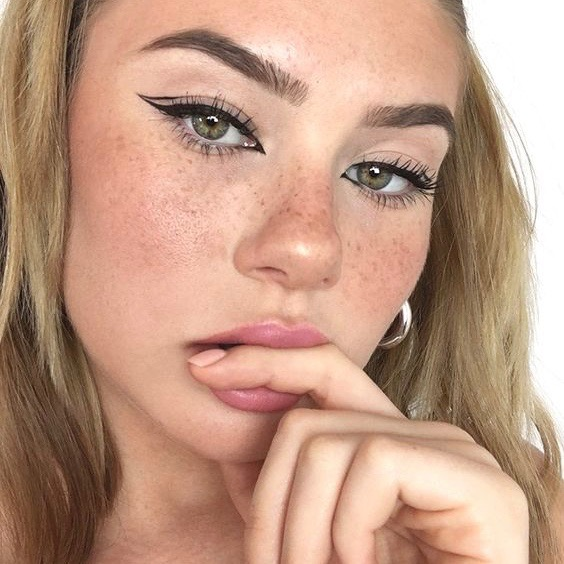
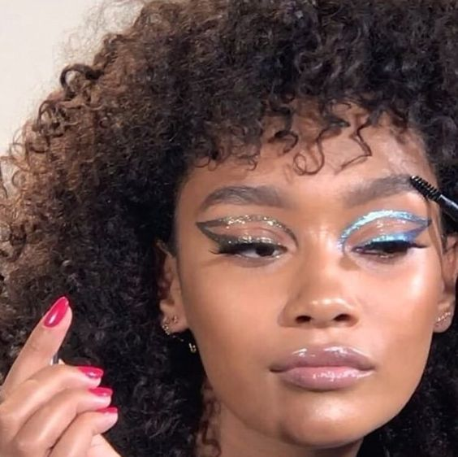

Pink and White

Beauty Blog
Makeup Tutorials
Tutorials



RETRO EYELINERS
Eyeliner was believed to be worn first by the Egyptians and Mesopotamians in the early 10.000 B.C. Same like now, it is worn to further accentuate and define ones' eyes. The simple flicked black liner would always remain iconic in makeup, however people now would start to show their creative side by creating retro eyeliner looks. Popularized in the 60's, retro liners are often known to be too "dramatic" and "heavy" for a normal everyday look and it is now a popular look that can be worn in any occasion.
Recreate the looks!
LOOK 1
Products Needed:
- 3 shades of Neon eyeliners.
- Concealer
Steps:
- Prep eyelids with concealer in order to have a clean base.
- Take one neon eyeliner and draw a line from the outer v and stopping on the outer crease.
- Draw a curve from your inner lid and stopping on the line drawn on the outer crease.
- Repeat again with the other liners.
- Done!!
LOOK 2
Products Needed:
Steps:
- Prep eyelids with concealer in order to have a clean base.
- Draw a thin feline flick from with the black liner.
- Draw a curve from the outer v and connect it with the end of the first liner.
- Draw a triangle that follows the size of your tearduct and fill it in.
- Done!!
LOOK 3
Products Needed:
- Two shades of liquid glitter eye pigments.
- Concealer
- Eyeliner brush
Steps:
- Prep eyelids with concealer in order to have a clean base.
- Draw a thick eyeliner by taking some product from the pigment with a brush on one eye.
- Draw a curve from the end of the liner and stop on the front of your tearduct.
- Repeat on other eye with the different shade.
- Done!!